Introducción a la Economía
Elasticidad, Eficiencia e Impuestos
Elasticidad precio de la demanda
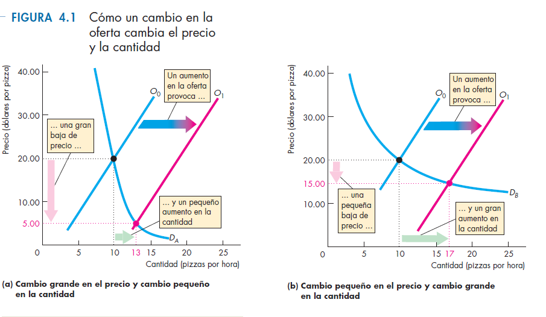
Elasticidad precio de la demanda
- Ya sabemos que si el precio sube, la cantidad demandada baja.
- La elasticidad precio de la demanda (\(E_d\)) cuantifica esa caída.
- Mide cuánto cambia la cantidad demandada cuando cambia el precio.
\[E_d = \left| \frac{\Delta Q \%}{\Delta P \%} \right|\]
Elasticidad precio de la demanda (2)
- La elasticidad de la demanda depende de varios factores:
- si el bien tiene muchos sustitutos, su demanda es más elástica;
- en plazos largos, la demanda suele ser más elástica;
- los bienes de lujo tienen demanda más elástica que los bienes de primera necesidad.
Elasticidad precio de la demanda (3)
- Si \(E_d = 1\), la demanda tiene elasticidad unitaria.
- Si \(E_d > 1\), la demanda es elástica.
- Si \(E_d < 1\), la demanda es inelástica.
A tener en cuenta
- Usamos cambios porcentuales y no absolutos.
- Para calcular la variación porcentual usamos el promedio del valor inicial y final como denominador.
- Si no usamos valor absoluto, la elasticidad sería negativa.
\[\Delta P\% = \frac{\Delta P}{(P_0 + P_1)/2}\]
Ejemplo numérico
- El precio pasa de 90 a 110.
- La cantidad pasa de 240 a 160.
Ejemplo
Variación absoluta
- La variación absoluta del precio es 20.
- La variación absoluta de la cantidad es 80.
- La variación porcentual del precio es 20%.
- La variación porcentual de la cantidad es 40%.
Casos extremos
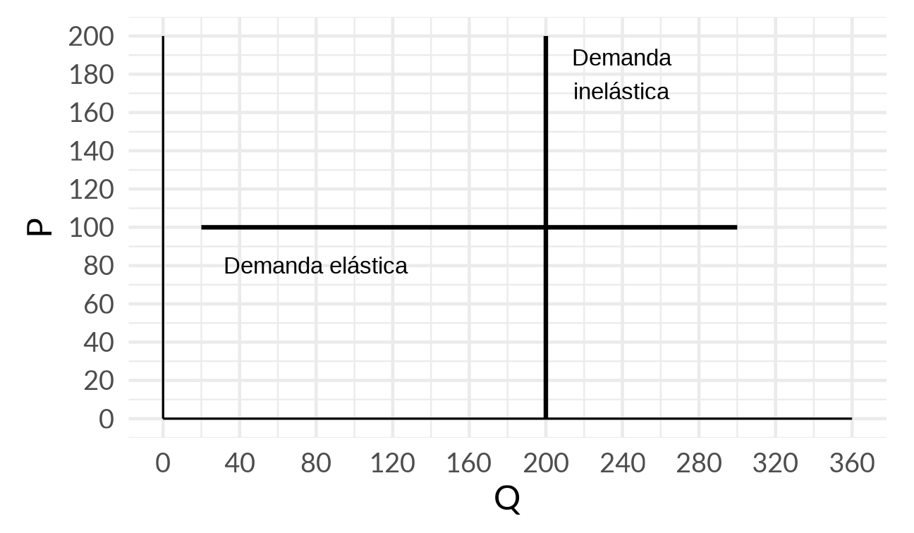
La elasticidad y los ingresos de las empresas
- Si hay un aumento en la oferta, baja el precio y sube la cantidad.
- ¿Qué pasa con el ingreso de las empresas (\(P \times Q\))?
- Depende de la elasticidad de la demanda.
Elasticidad e ingresos
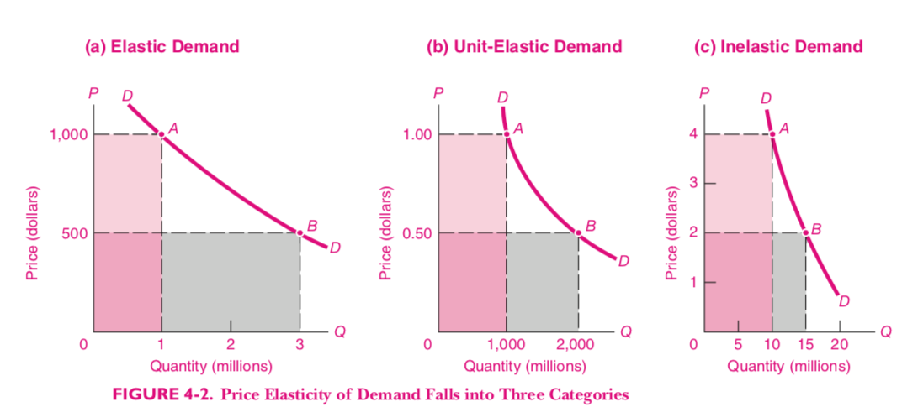
Elasticidad e ingresos
- Si la demanda es elástica, el aumento en \(Q\) es mayor que la caída en \(P\) y el ingreso sube.
- Si la demanda es inelástica, el aumento en \(Q\) es menor que la caída en \(P\) y el ingreso cae.
- Si la elasticidad es unitaria, los cambios se compensan.
Elasticidad ingreso del combustible
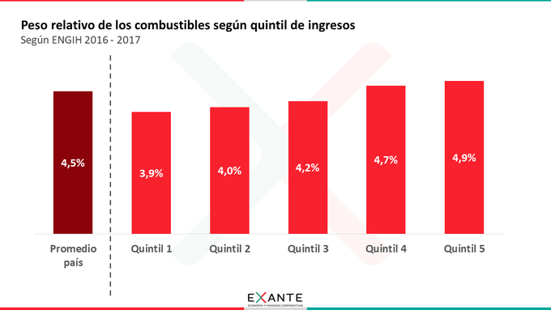
Elasticidad ingreso de la demanda de combustibles
- El quintil más pobre de los hogares uruguayos gasta 3,9% de sus ingresos en combustible.
- El quintil más rico gasta 4,9%.
- Cuando aumenta el ingreso, la participación del combustible en el presupuesto aumenta.
Elasticidad ingreso de la demanda de alimentos
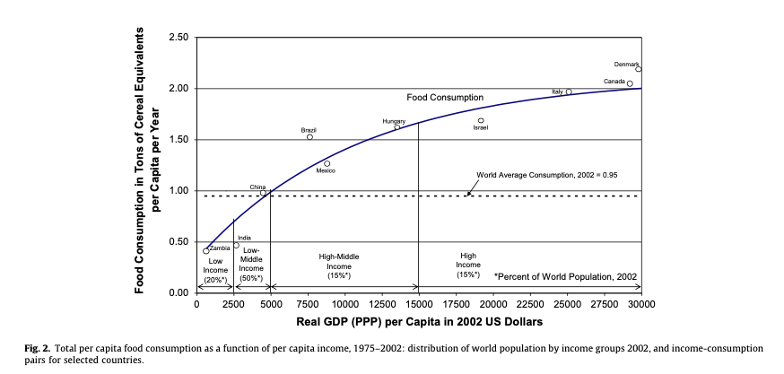
Elasticidad ingreso de los alimentos
- A medida que los países se hacen más ricos, su gasto en alimentos aumenta.
- Pero la participación de los alimentos en el gasto total decrece.
Mecanismos de asignación de recursos
- Precios
- Control centralizado
- Votación
- Concurso
- Orden de llegada
- Sorteo
- Características personales
La demanda y la disposición a pagar
- La curva de demanda indica cuántas unidades de un bien se comprarían a determinado precio.
Disposición a pagar (1)
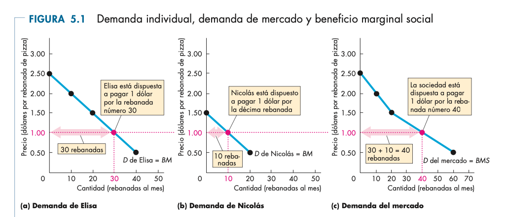
Disposición a pagar (2)
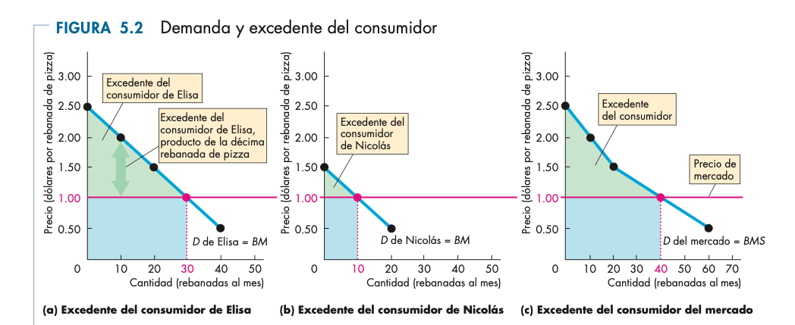
Excedente del productor (1)
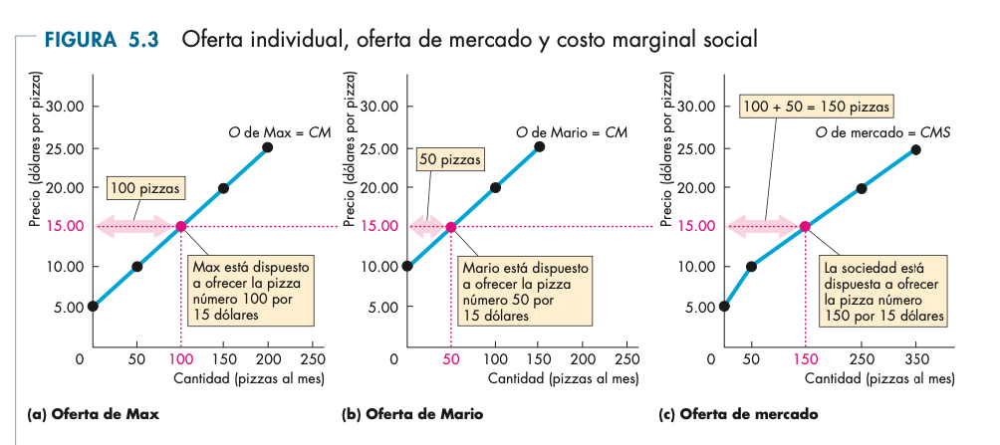
Excedente del productor (2)
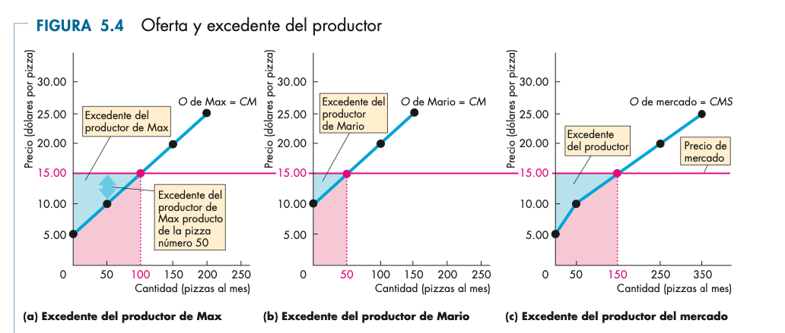
Equilibrio y excedentes
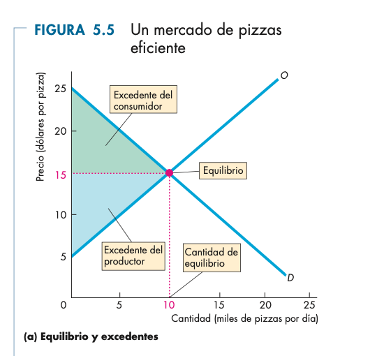
Equilibrio y eficiencia
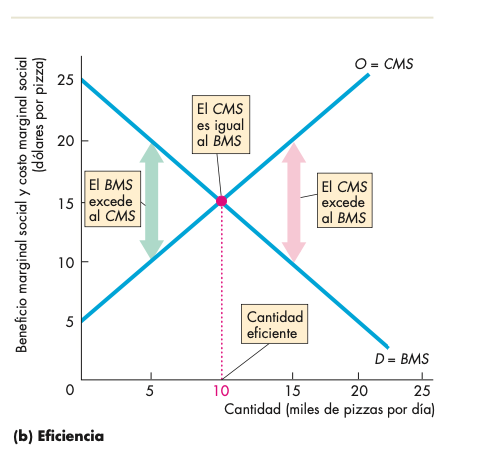
Sobreproducción
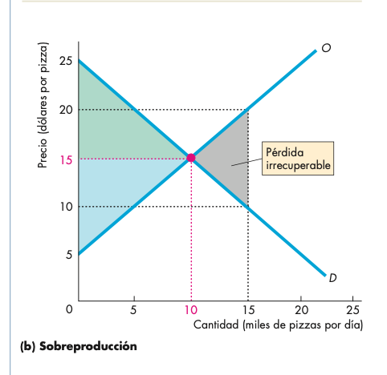
Subproducción
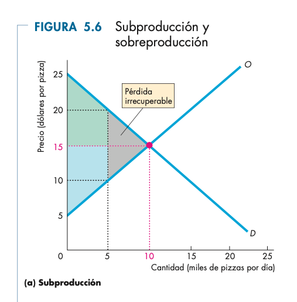
El excedente del consumidor
- La curva de demanda representa la disposición a pagar.
- El precio de equilibrio se determina en el cruce con la curva de oferta.
- Las primeras unidades compradas generan mayor satisfacción que las últimas.
- Todas las unidades se venden al mismo precio.
Usos
- El excedente del consumidor se calcula como el área entre el precio y la curva de demanda.
- Si la curva de demanda es lineal, es un triángulo.
- Sirve para medir bienestar y efectos de políticas económicas.
Aplicación a controles de precios
| Excedente del productor |
90000 |
| Excedente del consumidor |
90000 |
| Recaudación |
0 |
| Total |
180000 |
Controles de precios
| Excedente del productor |
40000 |
| Excedente del consumidor |
120000 |
| Total |
160000 |
- Pérdida de bienestar: 20000
Efecto de un impuesto
- Incidencia legal vs. incidencia económica.
- A veces los productores pueden trasladar el peso del impuesto a los consumidores.
- Depende de las elasticidades relativas de oferta y demanda.
Análisis económico
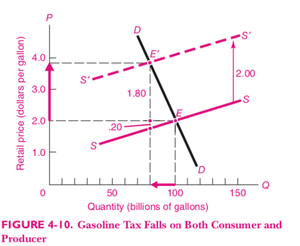
Análisis económico (2)
- El equilibrio inicial tiene precio 2 y 100 billones de galones vendidos.
- El impuesto desplaza la oferta hacia la izquierda por 2.
- El nuevo equilibrio implica un precio mayor para consumidores y una cantidad menor.
Impuesto sobre los consumidores
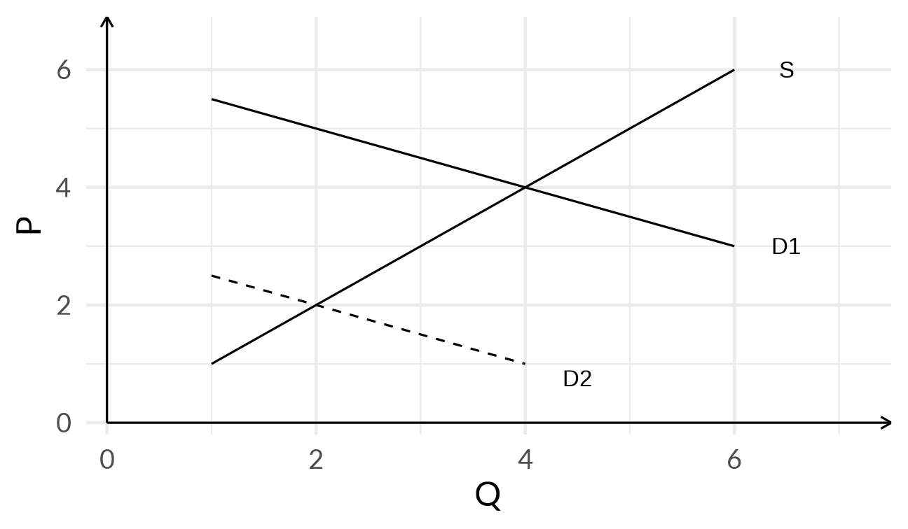
Impuesto sobre los productores
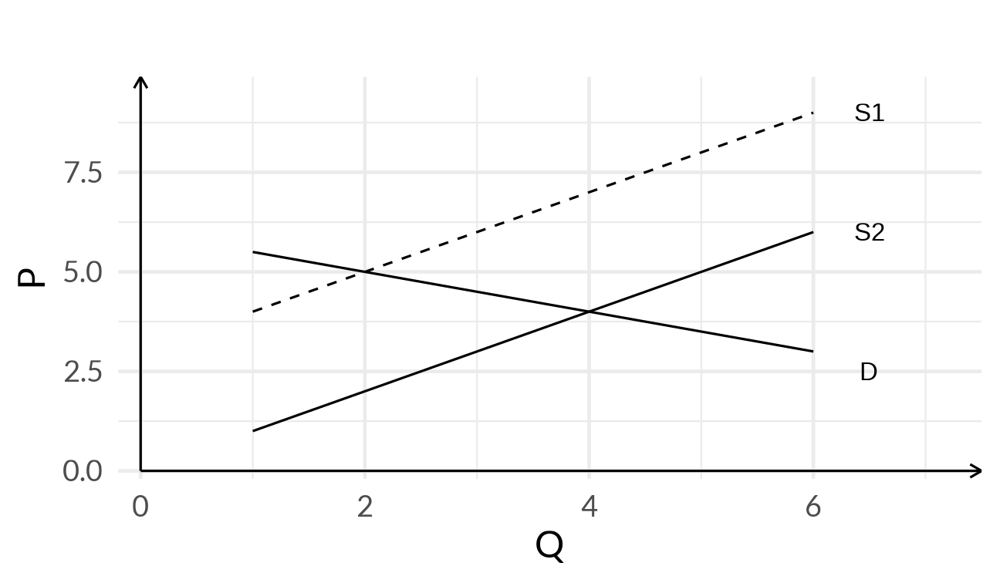
Bienestar antes del impuesto
| Excedente del productor |
8 |
| Excedente del consumidor |
4 |
| Recaudación |
0 |
| Total |
12 |
Bienestar después del impuesto
| Excedente del productor |
2 |
| Excedente del consumidor |
1 |
| Recaudación |
6 |
| Total |
9 |
Hay una pérdida de bienestar de 3.
Conclusiones
- El equilibrio de mercado es el mismo independientemente de si el impuesto recae legalmente en consumidores o productores.
- La incidencia económica del impuesto no depende de quién lo paga según la ley, sino de las elasticidades de oferta y demanda.